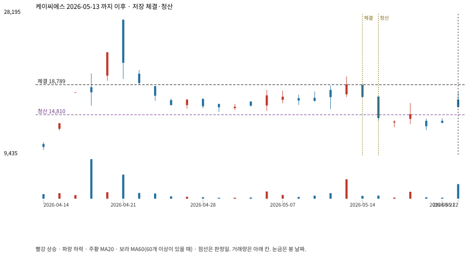

계좌를 다시 돌리지 않았다. 아래는 저장된 주문·체결·청산·비용·손익이다.

{
"case_id": "619a665a503bf9d0",
"status": "closed",
"trade": {
"symbol": "115500.KQ",
"signal_date": "2026-05-13",
"quantity": 273,
"entry": 18830,
"stop": 14817,
"target": 27500,
"planned_risk": 1106755.1289794992,
"reserved_cash": 5145730.59,
"fill": {
"date": "2026-05-14",
"price": 18789.39,
"fee": 5129.50347
},
"exit": {
"date": "2026-05-15",
"price": 14809.5915,
"reason": "stop",
"net_pnl": -1095657.5124494997,
"ambiguous_bar": false
}
},
"cost": "research fee 10bp each side, slippage 5bp; amounts below are the stored ledger, not a new run",
"chart": "c\/619a665a503bf9d0.svg"
}